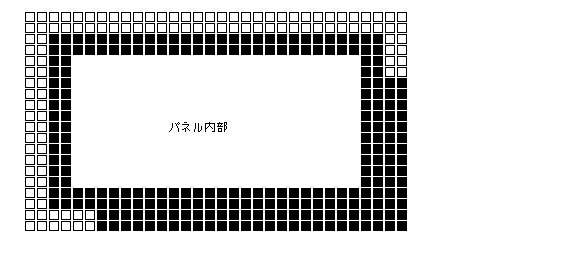
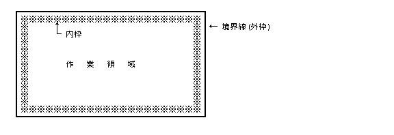
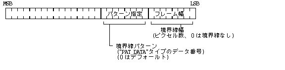
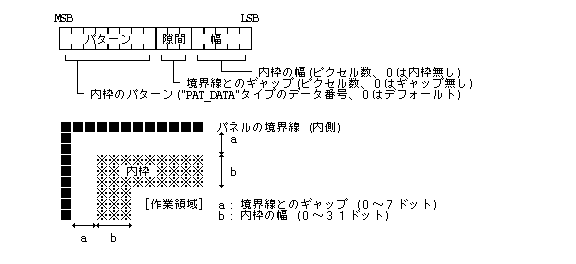
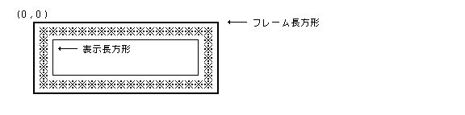

Системні панелі (Panels)マネージャは、外殻の HMI 機能の 1 つとして位置付けられ、 ダイアローグタイプのСистемні панелі (Panels)の生成 / 削除 / 操作等の機能を提供している。 アプリケーションプログラムは、 このСистемні панелі (Panels)マネージャを通して容易にダイアローグタイプのСистемні панелі (Panels)を使用することができる。
また、システムПовідомленняСистемні панелі (Panels)の表示機能もСистемні панелі (Panels)マネージャが提供している。
なお、フローティングタイプのСистемні панелі (Panels)に関しては、 Системні панелі (Panels)マネージャでは特に機能を提供せず、 アプリケーションが通常のВіконна система (Windowing System)として処理することになる。
なお、今後単にСистемні панелі (Panels)といった場合は、ダイアローグタイプのСистемні панелі (Panels)を示すものとする。
本仕様書では、Системні панелі (Panels)の標準的な形状に関して説明しているが、表示形状の詳細はインプリメントに依存する。
( ダイアローグタイプの ) Системні панелі (Panels)は、 パラメータの設定や、確認等を求めるСистемні панелі (Panels)であり、 その設定 / 操作が終了しないと先の処理に進めない場合に使用されるもので、 スクリーン上で通常Віконна система (Windowing System)の前面 / 前面Віконна система (Windowing System)の下に表示され移動 / 変形ができないものである。
Системні панелі (Panels)は表示された時点で強制的にユーザからの入力受付状態となり、 そのСистемні панелі (Panels)で要求している設定や操作を終了した時点でСистемні панелі (Panels)は消滅し、 以前に入力受付状態であったВіконна система (Windowing System)に入力受付状態は戻る。
Системні панелі (Panels)は多重にネスティングされて表示される場合があり、 その場合は発生順にオーバーラップされて表示され、 入力受付状態も最後に発生したСистемні панелі (Panels)に順次切り換わっていく。 Системні панелі (Panels)の操作を終了した場合は、 発生の逆順に表示が消えて入力受付状態が戻る。
アプリケーションプログラムはСистемні панелі (Panels)マネージャを使用してСистемні панелі (Panels)を生成し、 生成時に得られるСистемні панелі (Panels)ID ( >0 ) を使用して操作等を行なう。
生成したСистемні панелі (Panels)は、基本的に登録したПроцеси та потокиに依存し、 そのПроцеси та потокиが終了するとСистемні панелі (Panels)も自動的に削除されるが、 ある種のСистемні панелі (Panels)は複数Процеси та потокиで使用される場合があるため、 Системні панелі (Panels) ID はПроцеси та потокиグローバルであり、 またСистемні панелі (Panels)の定義データはすべてのПроцеси та потокиからアクセスできる領域にある必要がある。 このような複数Процеси та потокиで使用されるСистемні панелі (Panels)は、 ローカルメモリ領域のデータを参照していないように作成する必要があるが、 Системні панелі (Panels)マネージャは特にこのための保証は行なわない。
Системні панелі (Panels)マネージャは内部的には、 Віконна система (Windowing System)マネージャを使用して特殊なВіконна система (Windowing System)としてのСистемні панелі (Panels)を生成する。 従ってСистемні панелі (Panels) ID は、 Віконна система (Windowing System)マネージャにより生成されたВіконна система (Windowing System) ID に等しいことになる。
システムПовідомленняСистемні панелі (Panels)はスクリーンの下部に 1 行分の大きさで常に表示されている特殊なСистемні панелі (Panels)であり、 他のВіконна система (Windowing System) / Системні панелі (Panels)等で決してオーバーラップされない領域である。
フルスクリーンモードでは、システムПовідомленняСистемні панелі (Panels)は隠れて見えなくなる。
このСистемні панелі (Panels)では一切の操作はできず、 単にПовідомленняの表示のみが行なわれる。 一度表示されたПовідомленняは、 別のПовідомленняによりオーバーライトされない限り消えることはない。
システムПовідомленняСистемні панелі (Panels)はシステムの初期化の時点で自動的に生成されるため、 アプリケーションが表示を行なう場合は単に表示用の関数をコールすればよいが、 システムПовідомленняСистемні панелі (Panels)の目的にあった使用法に限定すべきである。
Системні панелі (Panels)は、一般的にВіконна система (Windowing System)と同様に下図のように右下に影が付いた境界線により囲まれた矩形領域として表示される。

Системні панелі (Panels)の内部には通常、強調用の内枠を表示する。 内枠は、Системні панелі (Panels)の境界線の内側に狭い隙間を開けて描かれる、 境界線より太い枠である。なお、境界線のことを外枠とも呼ぶ。
内枠としては任意のパターンが指定可能であるが、 通常はСистемні панелі (Panels)の用途に応じて「通常Системні панелі (Panels)」「警告Системні панелі (Panels)」「重大警告Системні панелі (Panels)」の 3 種類のパターンが使用される。
内枠の内側がСистемні панелі (Panels)の作業領域であり、 その表示内容はアプリケーションに依存し、 各種コントロールКомпоненти графічного інтерфейсу、図形イメージデータ、文字列の任意の組み合せとなる。 また、通常はСистемні панелі (Panels)の操作を終了するためのモーメンタリスイッチが存在する。

Системні панелі (Panels)の表示に関する以下の項目は、Системні панелі (Panels)の生成時に指定することができる。
Системні панелі (Panels)は以下のデータ構造により定義される。
typedef struct panel {
UW oframe; /* 境界線(外枠)の属性 */
UW iframe; /* 内枠の属性 */
W bgpat; /* 背景パターン */
RECT r; /* 表示領域 */
W defsw; /* デフォールトスイッチ番号 */
W nitem; /* 項目数 */
PNL_ITEM *item; /* 項目配列へのポインタ */
} PANEL;
oframe :

frame :

bgpat:
PAT_DAT"
タイプのデータ番号。0 の場合はデフォールトを意味する。
r:
defsw:
nitem:
item:
nitem 個の要素からなる項目配列へのポインタである。
Системні панелі (Panels)の構成項目 ( PNL_ITEM ) は、
以下のように定義される。
typedef struct pnl_item {
UW itype; /* 項目タイプ */
UW info; /* 各種情報 */
RECT ir; /* 表示領域 */
W desc; /* 内部ディスクリプタ */
W dnum; /* データ番号 */
H *ptr; /* データポインタ */
} PNL_ITEM;
itype:
NULL_ITEM | 0 | -- 空項目 |
PTR_ITEM | 1 | -- ポインタイメージ |
PICT_ITEM | 2 | -- ピクトグラムイメージ |
PAT_ITEM | 3 | -- パターンイメージ |
BMAP_ITEM | 4 | -- ビットマップイメージ |
| 5 | -- 予約 | |
TEXT_ITEM | 6 | -- 文字列 |
PARTS_ITEM | 7 | -- コントロールКомпоненти графічного інтерфейсу |
ACT_ITEM | 0x80 | -- 動作項目( PD プレスの通知) |
ATR_TEXT | 0x20 | -- 属性付き文字列 |
ACT_ITEM, ATR_TEXT の指定は上記項目タイプに OR で指定される。
ATR_TEXT 指定は TEXT_ITEM に対してのみ適用され、
その文字列項目が属性データを含んでいることを意味する。
コントロールКомпоненти графічного інтерфейсу以外は表示のみの項目であり基本的に操作はできないが、
ACT_ITEM 指定を行なった場合は、
その表示領域で PD のプレスが発生した場合、
アプリケーションに通知される。
コントロールКомпоненти графічного інтерфейсуの場合は、ACT_ITEM 指定は無関係であり、
Компоненти графічного інтерфейсуの操作を行なった場合は常にアプリケーションに通知される。
NULL_ITEM として指定した領域には何も表示されないが
ACT_ITEM と組合わせて、
指定した領域内での PD プレスを検出するために使用される。
info:
ir:
ir の左上の点に一致するように移動したものが実際の表示領域となる。
したがって、この場合は、ir の右下の点は使用されない。
desc:
dnum ) で定義した項目の場合：dnum:
dnum ≠ 0 の場合は ptr は無視される。
ptr:
dnum = 0 とする必要がある。
複数のオルタネートスイッチをグループ化して排他的動作を行なわせるものをグループスイッチと呼ぶ。 即ち、グループ内のあるスイッチが ON 状態となった場合には、 同一グループ内で既に ON 状態となっているスイッチは自動的に OFF 状態となる。 グループスイッチでは、常に 0 個または 1 個のスイッチのみ ON 状態となる。
グループスイッチは、info データのグループに対応するビットを
"1" にセットすることにより指定される。
即ち、info データの同一ビットが "1"
にセットされているスイッチ群が同一のグループに属することになる。
グループは最大32個まであり、1つのスイッチを2つ以上のグループに属させることも可能である。
グループスイッチの例を以下に示す。
スイッチ1のinfo = 0x01
スイッチ2のinfo = 0x01
スイッチ3のinfo = 0x10
スイッチ4のinfo = 0x10
スイッチ5のinfo = 0x11
ATR_TEXT 指定の付いた文字列項目は、
文字の属性を指定するために、TAD
で規定されている以下の文章付箋セグメントを文字列の中に含むことができる。
上記以外の付箋は無視される。
また、属性付き文字列を ATR_TEXT 指定せずに登録した場合、
その表示は保証されない。属性付き文字列は、表示領域の上端に合わせて表示される。
Системні панелі (Panels)は 1 つの独立した描画環境を持ち、 Системні панелі (Panels)の生成時に対応した描画環境が割り当てられ、 その描画環境上でСистемні панелі (Panels)の描画が行なわれる。
この描画環境の内容の詳細はインプリメントに依存したСистемні панелі (Panels)描画のための標準的な設定となっているが、 座標系とクリッピング領域は以下のようになっている。
Віконна система (Windowing System)と異なり、作業領域の左上の点は ( 0 , 0 ) でない点に注意が必要である。

アプリケーションが、Системні панелі (Panels)上に特殊な描画を行ないたい場合は、 Системні панелі (Panels)に割り当てられている描画環境IDを取り出し、 その描画環境に対して描画を行なうことにより可能である。 ただし、アプリケーションが、 描画環境のパラメータを変更した場合のСистемні панелі (Panels)の表示は保証されなくなるため、 変更した場合は必ず元に戻すか、 描画環境の複製を作成して使用する必要がある。
Системні панелі (Panels)は入力受付状態を占有した形で動作し、 発生したイベントは基本的にすべて現在表示されているСистемні панелі (Panels)を対象とする。 従って、PDプレスによる自動的なВіконна система (Windowing System) / Системні панелі (Panels)の入力受付状態の切り換えは行なわれず、 Системні панелі (Panels)以外の場所での PD プレスの操作は通常は無視される。
Системні панелі (Panels)の動作、即ちОбробка подійは、以下に示す 2 つの方法により行なう。
この場合、アプリケーションは取り出したイベントの発生場所をチェックし、
対応する動作をКомпоненти графічного інтерфейсуマーネージャ等の関数を使用して直接行なう必要がある。
なお、 この場合は、
他のВіконна система (Windowing System)への切換えが発生しないようにwget_evt() を
NOMSG 指定で実行する必要がある。
Системні панелі (Panels)マネージャで用意されている標準Системні панелі (Panels)動作関数
(pact_pnl)を使用する。
この場合、Системні панелі (Panels)マネージャがイベントを順次取り出し、
対応する処理を行ない、その結果、イベントがアプリケーションに戻される。
通常は、(2)の方法を用いるが、イベントに対する特殊な動作を必要とする場合は、 (1)の方法を使用することになる。
typedef W PNID; /* Системні панелі (Panels)ID */
#define NULL_ITEM 0 /* 無し */ #define PTR_ITEM 1 /* ポインタ */ #define PICT_ITEM 2 /* ピクトグラム */ #define PAT_ITEM 3 /* パターン */ #define BMAP_ITEM 4 /* ビットマップ */ #define FIG_ITEM 5 #define TEXT_ITEM 6 /* 文字列 (1行) */ #define PARTS_ITEM 7 /* コントロールКомпоненти графічного інтерфейсу */
#define ACT_ITEM 0x80 /* 動作項目(上記項目にORで指定) */ #define BLT_TEXT 0x40 #define ATR_TEXT 0x20 /* 属性付き文字列(上記項目にORで指定) */
typedef struct pnl_item {
UW itype; /* 項目タイプ */
UW info; /* 各種情報 */
RECT ir; /* 表示領域 */
W desc; /* 内部ディスクリプタ */
W dnum; /* データ番号 */
H *ptr; /* データポインタ */
} PNL_ITEM;
typedef struct panel {
UW oframe; /* 境界線(外枠)の属性 */
UW iframe; /* 内枠の属性 */
W bgpat; /* 背景パターン */
RECT r; /* 表示領域 */
W defsw; /* デフォールトスイッチ番号 */
W nitem; /* 項目数 */
PNL_ITEM *item; /* 項目配列へのポインタ */
} PANEL;
ここでは、Системні панелі (Panels)マネージャがサポートしている各関数の詳細を説明する。 これらの関数群は外殻の拡張システムコールとして提供される。
各関数のエラーコードとしては、ここで示した以外にも、 核や他の外殻でエラーが検出された場合は、そのエラーコードが直接戻る。
|
PNID pcre_pnl(PANEL *pnl, PNT *p)
PANEL *pnl Системні панелі (Panels)定義データ PNT *p Системні панелі (Panels)表示位置
≧0 正常(Системні панелі (Panels)ID) ＜0 エラー(エラーコード)
pnl で定義したСистемні панелі (Panels)を生成し、
p で指定した位置にСистемні панелі (Panels)の表示を行なう。
Системні панелі (Panels)はオープンされると入力受付状態を横取りした形で占有し、
Системні панелі (Panels)をオープンしたПроцеси та потокиがアクティブПроцеси та потокиとなる。
Системні панелі (Panels)をオープンしたПроцеси та потокиがアクティブПроцеси та потокиでなかった場合は、
元の入力受付状態のВіконна система (Windowing System)に対して EV_INACT が送られ、
EV_INACT が受信された後にСистемні панелі (Panels)がオープンされる。
Системні панелі (Panels)をオープンしたПроцеси та потокиが既にアクティブПроцеси та потокиであった場合は、
EV_INACT は送られない。
Системні панелі (Panels)をクローズした場合、
オープンした時に入力受付状態であったВіконна система (Windowing System)に入力受付状態が戻り、
EV_INACT を送った場合は、
EV_SWITCH (W_SWITCHコマンド) が送られる。
p はСистемні панелі (Panels)の境界線を含む全体の表示領域の左上の点を絶対座標で指定したもので、
p = NULL の場合は、Системні панелі (Panels)の定義データ内に定義された位置に表示される。
指定したСистемні панелі (Panels)の定義データは生成後も参照されるので、保存しておかなければいけない。
p->x に 0x8000 を指定すると水平方向にセンタリングされ、
p->y に 0x8000 を指定すると垂直方向にセンタリングされる。
Системні панелі (Panels)の境界線, 内枠, 背景の各パターンを指定したデータ番号が不正な場合は、 デフォルトパターンが適用される。また、デフォルトスイッチ番号が不正な場合は、 デフォルトスイッチが無いものとしてСистемні панелі (Panels)を生成する。
関数値としてСистемні панелі (Panels)ID( > 0 )が戻され、 以後の操作の際に指定する。
EX_ADR : アドレス(pnl,p)のアクセスは許されていない。 EX_NOSPC : システムのメモリ領域が不足した。 EX_PAR : パラメータが不正である(Системні панелі (Panels)の定義データが不正)。 EX_SAVE : イメージのセーブ領域が不足した(ネスティングしたСистемні панелі (Panels)の場合)。
|
PNID popn_pnl(W dnum, PNT *p)
W dnum PANEL_DATA タイプのデータ番号 PNT *p Системні панелі (Panels)表示位置
≧0 正常(Системні панелі (Panels)ID) ＜0 エラー(エラーコード)
dnumで指定したデータ番号を持つ、"PANEL_DATA"
タイプのデータで定義したСистемні панелі (Panels)を生成し、p で指定した位置にСистемні панелі (Panels)の表示を行なう。
Системні панелі (Panels)はオープンされると入力受付状態を横取りした形で占有し、
Системні панелі (Panels)をオープンしたПроцеси та потокиがアクティブПроцеси та потокиとなる。
Системні панелі (Panels)をオープンしたПроцеси та потокиがアクティブПроцеси та потокиでなかった場合は、
元の入力受付状態のВіконна система (Windowing System)に対して EV_INACT が送られ、
EV_INACT が受信された後にСистемні панелі (Panels)がオープンされる。
Системні панелі (Panels)をオープンしたПроцеси та потокиが既にアクティブПроцеси та потокиであった場合は、
EV_INACT は送られない。
Системні панелі (Panels)をクローズした場合、
オープンした時に入力受付状態であったВіконна система (Windowing System)に入力受付状態が戻り、
EV_INACT を送った場合は、EV_SWITCH ( W_SWITCH コマンド )
が送られる。
p はСистемні панелі (Panels)の境界線を含む全体の表示領域の左上の点を絶対座標で指定したもので、
p = NULL の場合は、Системні панелі (Panels)の定義データ内に定義された位置に表示される。
p->x に0x8000を指定すると水平方向にセンタリングされ、
p->y に0x8000を指定すると垂直方向にセンタリングされる。
Системні панелі (Panels)の境界線, 内枠, 背景の各パターンを指定したデータ番号が不正な場合は、 デフォルトパターンが適用される。また、デフォルトスイッチ番号が不正な場合は、 デフォルトスイッチが無いものとしてСистемні панелі (Panels)を生成する。
関数値としてСистемні панелі (Panels)ID( > 0 ) が戻され、 以後の操作の際に指定する。
EX_ADR : アドレス(p)のアクセスは許されていない。 EX_DNUM : データ(dnum)はデータマネージャに登録されていない。 EX_NOSPC : システムのメモリ領域が不足した。 EX_PAR : パラメータが不正である(Системні панелі (Panels)の定義データが不正)。 EX_SAVE : イメージのセーブ領域が不足した(ネスティングしたСистемні панелі (Panels)の場合)。
|
ERR pdel_pnl(W pnid)
W pnid Системні панелі (Panels)ID
≧0 正常 ＜0 エラー(エラーコード)
pnid で指定したСистемні панелі (Panels)を削除し、Системні панелі (Panels)の表示を消去する。
消去するСистемні панелі (Panels)は最前面に表示されているСистемні панелі (Panels)、即ち、最も最後に生成したСистемні панелі (Panels)でなくてはいけない。
Системні панелі (Panels)を削除した場合にはСистемні панелі (Panels)に属しているКомпоненти графічного інтерфейсу群も自動的に削除される。 また、Системні панелі (Panels)を生成したПроцеси та потокиが終了した場合は、Системні панелі (Panels)は自動的に削除される。
EX_PNID : Системні панелі (Panels)(pnid)は存在していない(最前面のСистемні панелі (Panels)でない)。
|
W pact_pnl(W pnid, EVENT *ev, W *itemno)
W pnid Системні панелі (Panels)ID EVENT *ev 動作結果のイベントが格納される W *itemno 動作結果の項目番号が格納される
≧0 正常(関数値は項目の処理状態コード) ＜0 エラー(エラーコード)
pnid で指定したСистемні панелі (Panels)の標準動作を行ない、
動作結果としてのイベント、および項目番号をそれぞれ、
ev, itemno で指定した領域に格納して、
操作した項目の状態を関数値として戻す。
この関数により、以下に示す内容の処理が行なわれる。
通常はデフォールトスイッチが押されてСистемні панелі (Panels)の処理が完全に終了するまで、
pact_pnl() を繰り返し実行することになる。
cact_par() を実行する。
その結果Компоненти графічного інтерфейсуの状態が変更されなかった場合は (5) の処理を行ない、
状態が変更された場合は (3)、(4) の処理を行なう。
cact_par() を実行した場合：
cact_par() の関数値を pact_pnl() の関数値としてリターンする。
この時、*itemno には操作したКомпоненти графічного інтерфейсуの項目番号が設定され、
*ev には EV_NULL が設定される。
この場合、次に pact_pnl() が呼ばれた場合のボックスの入力状態は、
以下のようになる。
[タブ] -- 項目番号順での次のボックスが入力状態となる
[入力終][改段落 / 改行] -- 同一のボックスが再度入力状態となる
ただし、デフォールトスイッチが定義されている場合は、
「改段落 / 改行」キーにより、デフォールトスイッチも動作する。
デフォールトスイッチの動作は次に pact_pnl() が呼ばれたときに行なわれる。
デフォールトスイッチの動作が行なわれると、*itemno
にデフォルトスイッチの項目番号を負にしたものが設定される。
cact_par() の関数値を pact_pnl()の関数値として返す。
この時 *itemno には、その時入力状態だったボックスКомпоненти графічного інтерфейсуの項目番号が設定され、
*ev には EV_NULL が設定される。
そして、次に pact_pnl が呼ばれた時に、
このボックスКомпоненти графічного інтерфейсуの終了の契機となったイベントに対する処理が行なわれる。
pact_pnl() からリターンする。
ボックスの入力状態は変わらない。
cact_par() を実行した場合：
cact_par() の関数値を pact_pnl() の関数値としてリターンする。
この時、*itemno には操作したКомпоненти графічного інтерфейсуの項目番号が設定され、
*ev には EV_NULLが設定される。
cact_par() が中断する場合があるが、
その場合も cact_par() の関数値がそのまま戻るので、
対応する処理を行なう必要がある。
ACT_ITEM が設定された表示項目で PD がプレスされた場合は、
プレスされた時点で、pact_pnl() からリターンする。
この時、*itemno にはその項目番号が設定され、
*ev には得られたイベント ( EV_BUTDWN )が設定される。
関数値は 0 となる。
*itemno に現在「入力状態」であるボックスКомпоненти графічного інтерфейсуの項目番号
( 無い場合は 0 ) を、*ev には得られたイベントを設定して戻る。
関数値は以下の値となる(cact_par() の値と同一)。
Меню та командні інтерфейси指定： P_MENU (0x6010)
他のイベント： P_EVENT (0x6020)
なお、Меню та командні інтерфейси指定とは、以下のいずれかの場合を示す。
(1) PD のМеню та командні інтерфейсиボタンを押した状態でのクリック
(2) 「命令」キーを押した状態でのプレス
(3) 「命令」キーと別のキーの同時押し(キーマクロ)
(4) Меню та командні інтерфейси起動ボタンでのクリック(タッチСистемні панелі (Panels)の場合)
なお、イベントとしてEV_REQUEST の W_REDISP が返った場合は、
wid で指定されたСистемні панелі (Panels)やВіконна система (Windowing System)の再表示をおこなう必要がある。
Системні панелі (Panels)の再表示の場合、Системні панелі (Panels)構造体で定義した部分は再描画がおこなわれているので、
アプリケーションで描画した部分があれば再表示することになる。
なお、アクティブでないСистемні панелі (Panels)や、Віконна система (Windowing System)に対しても再表示要求が発生することに注意が必要である。
EX_ADR : アドレス(ev,itemno)のアクセスは許されていない。 EX_PNID : Системні панелі (Panels)(pnid)は存在していない。
|
W pget_itm(W pnid, W itemno, PNL_ITEM *item)
W pnid Системні панелі (Panels)ID W itemno 項目番号 PNL_ITEM *item Системні панелі (Panels)項目データ
≧0 正常 ＜0 エラー(エラーコード)
pnid で指定したСистемні панелі (Panels)内の itemno で指定した項目の定義データを取り出し、
item で指定した領域に格納する。
格納される内容は定義した内容と同一であるが、内部ディスクリプタ
( item->desc ) には、以下の値が格納され、
関数値として、この内部ディスクリプタの値が戻る。
コントロールКомпоненти графічного інтерфейсуの場合： -- 登録されたКомпоненти графічного інтерфейсуID
コントロールКомпоненти графічного інтерфейсу以外の場合： -- 0
item = NULL の場合は項目の定義データの取り出しは行なわれないが、
関数値として上記の内部ディスクリプタの値が戻る。
EX_ADR : アドレス(item)のアクセスは許されていない。 EX_PAR : パラメータが不正である(itemnoが不正)。 EX_PNID : Системні панелі (Panels)(pnid)は存在していない。
|
W pset_itm(W pnid, W itemno, PNL_ITEM *item)
W pnid Системні панелі (Panels)ID W itemno 項目番号 PNL_ITEM *item Системні панелі (Panels)項目データ
≧0 正常(関数値は項目の内部ディスクリプタ) ＜0 エラー(エラーコード)
pnid で指定したСистемні панелі (Panels)内の itemno で指定した項目の定義データを
item で指定した領域の内容に変更し、
Системні панелі (Panels)の再表示を行なう。
item = NULL の場合は再設定を行なわず、
指定した項目の再表示のみを行なう。
特に pset_itm(pnid, -1,NULL)の場合は、
すべての項目の再表示を行う。
関数値として、項目定義データ設定後の以下の内部ディスクリプタの値が戻る。
コントロールКомпоненти графічного інтерфейсуの場合： -- 登録されたКомпоненти графічного інтерфейсуID
コントロールКомпоненти графічного інтерфейсу以外の場合： -- 0
|
W psel_box(W pnid, W itemno)
W pnid Системні панелі (Panels)ID W itemno 項目番号
≧0 正常(関数値は入力状態のボックスの項目番号(該当なしの場合は0)) ＜0 エラー(エラーコード)
pnid で指定したСистемні панелі (Panels)内で、
itemno で指定した項目番号を持つボックスКомпоненти графічного інтерфейсуを「入力状態」のボックスとして選択し、
そのボックスКомпоненти графічного інтерфейсуの項目番号を関数値として戻す。
「入力状態」として選択したボックスКомпоненти графічного інтерфейсуが、
pact_pnl() を実行した場合にキー入力を受け付けることになる。
itemno = 0 の場合は、ボックスКомпоненти графічного інтерфейсуの入力状態の変更は行なわれず、
単に現在入力状態であるボックスКомпоненти графічного інтерфейсуの項目番号を関数値として戻す。
該当するものが無い場合は、関数値として 0 が戻る。
itemno で指定した項目が操作許可状態のボックスКомпоненти графічного інтерфейсуでない場合は、
EX_PAR のエラーとなる。
EX_PAR : パラメータが不正である(itemno が不正,操作許可のボックスКомпоненти графічного інтерфейсуでない)。 EX_PNID : Системні панелі (Panels)(pnid)は存在していない。
|
GID pget_gid(W pnid)
W pnid Системні панелі (Panels)ID
≧0 正常(関数値はСистемні панелі (Panels)の描画環境ID) ＜0 エラー(エラーコード)
pnid で指定したСистемні панелі (Panels)で使用している描画環境IDを取り出し、
関数値として戻す。
アプリケーションがこの描画環境IDを用いてСистемні панелі (Panels)上に直接描画する場合は、 基本的に必要なパラメータを再設定し、描画後は元の設定に戻しておく必要がある。 パラメータを変更したままの状態でСистемні панелі (Panels)の表示／操作等を行なった場合の動作は保証されないので注意が必要である。
EX_PNID : Системні панелі (Panels)(pnid)は存在していない。
|
W pact_err(W kind, TC *arg1, TC *arg2, TC *arg3)
W kind PANEL_DATA タイプのデータ番号 TC *arg1 文字列1 TC *arg2 文字列2 TC *arg3 文字列3
≧0 正常(関数値はスイッチの種別(デフォールトスイッチは0)) ＜0 エラー(エラーコード)
kind で指定した "PANEL_DATA"
タイプのデータ番号をもつ標準エラー警告Системні панелі (Panels)を表示する。
kind < 0 の場合は、- kind をデータ番号とする。
標準エラー警告Системні панелі (Panels)は、データ番号が 1000 以上のため、
kind ≧ 1000 または kind ≦ -1000でなくてはいけない。
Системні панелі (Panels)の定義データの先頭の 3 つまでの項目が文字列項目の場合は、 順番に、arg1 〜arg3 で指定した文字列項目に置き替えられる。
例: 項目1 文字列項目 -- arg1 に置き替えられる。
項目2 文字列項目 -- arg2 に置き替えられる。
項目3 文字列項目でない -- arg3 は無視される。
例: 項目1 文字列項目 -- arg1 に置き替えられる。
項目2 文字列項目でない -- arg2, arg3 は無視される。
デフォールトスイッチ項目は必ず存在し、 デフォールトスイッチから連続した n 個のモーメンタリスイッチ項目 (ピクトグラムモーメンタリも含む)のいずれかのプレスで処理を終了し、 (プレスされたモーメンタリスイッチ項目番号) - (デフォールトスイッチ項目番号) の値 ( 0 〜 n - 1 ) を関数値として戻す。
例: デフォールトスイッチ項目番号を 4 とし、項目 7 までが、モーメンタリスイッチの場合、 4 〜 7 のスイッチのプレスで処理を終了し、 関数値として 0 〜 3 を戻す。
kind で指定した番号の "PANEL_DATA" タイプのデータが登録されていない場合、
およびデフォールトスイッチ項目が規定されていない場合は、
EX_PAR のエラーとなる。
また、デフォールトスイッチ項目番号より小さい項目番号の
PARTS_ITEM 項目が存在する場合は、
EX_PAR のエラーとなる。
EX_ADR : アドレス(arg1〜3)のアクセスは許されていない。
EX_PAR : パラメータが不正である(-1000 < kind < 1000、Системні панелі (Panels)データが登録され
ていない、デフォールトスイッチが未定義、デフォールトスイッチ項目
番号より小さい番号のКомпоненти графічного інтерфейсу項目が存在する)。
EX_SAVE : イメージのセーブ領域が不足した
(kind > 0 でネスティングしたСистемні панелі (Panels)の場合)。
|
W pdsp_msg(TC *msg)
TC *msg 文字列
≧0 正常(関数値は表示文字数) ＜0 エラー(エラーコード)
システムПовідомленняСистемні панелі (Panels)に現在表示されているПовідомленняを消去し、
msg で指定したПовідомленняを新たに表示する。
msg = NULL の場合は、単に現在の表示の消去を行なう。
Повідомленняは、システムのデフォールトУправління шрифтами (Font Manager)、 通常体、デフォールトカラーで表示され、 領域をはみでた部分はクリップされる。
関数値としてはクリップされずに実際に表示された文字数が戻る。
EX_ADR : アドレス(msg)のアクセスは許されていない。
|
ERR pdsp_tim(UW stat)
UW stat メタキー状態
≧ 0 正常 ＜ 0 エラー(エラーコード)
statで指定したメタキー状態に対応した言語モード、
入力補助モード、および現在時刻をシステムПовідомленняСистемні панелі (Panels)に表示する。
実際には、現在表示している言語モード、入力補助モード、
現在時刻と異なっている場合のみ表示の更新を行なう。
この関数は、メターキー状態が変更された場合、 および適当な周期でВіконна система (Windowing System)マネージャにより実行されるため、 通常のアプリケーションでは実行する必要はない。
|
ERR pact_msg(WEVENT* ev)
WEVENT *ev Віконна система (Windowing System)イベント
≧0 正常 ＜0 エラー(エラーコード)
システムПовідомленняСистемні панелі (Panels)に対して発生したイベント ev に応じて、
システムПовідомленняСистемні панелі (Panels)の表示の更新を行なう。
NULLイベントや再表示イベントを受け付ける。
関数値として、処理したイベントのタイプが返る。
このシステムコールは、Віконна система (Windowing System)マネージャによって自動的に実行されるため、 通常のアプリケーションでは実行する必要はない。
EX_ADR : アドレス(ev)のアクセスは許されていない。